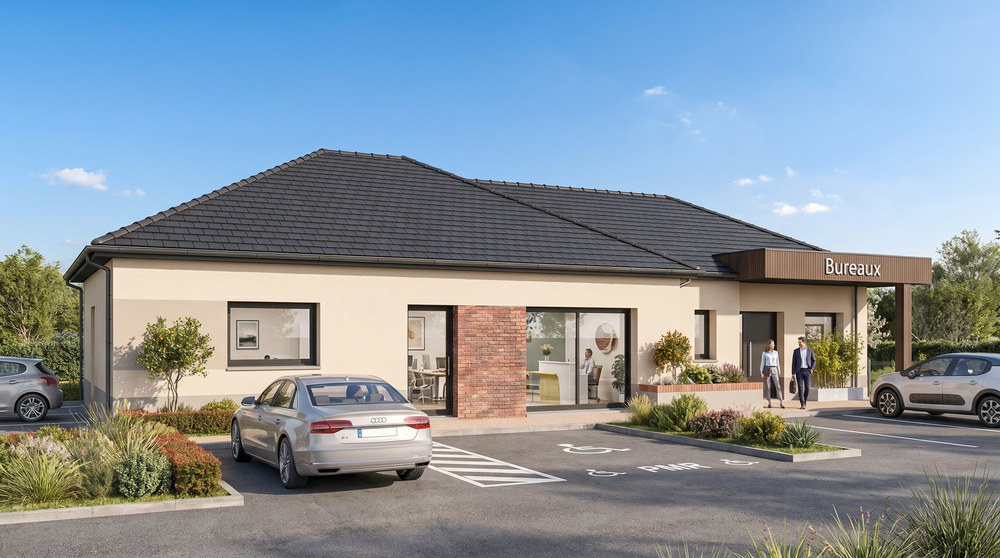
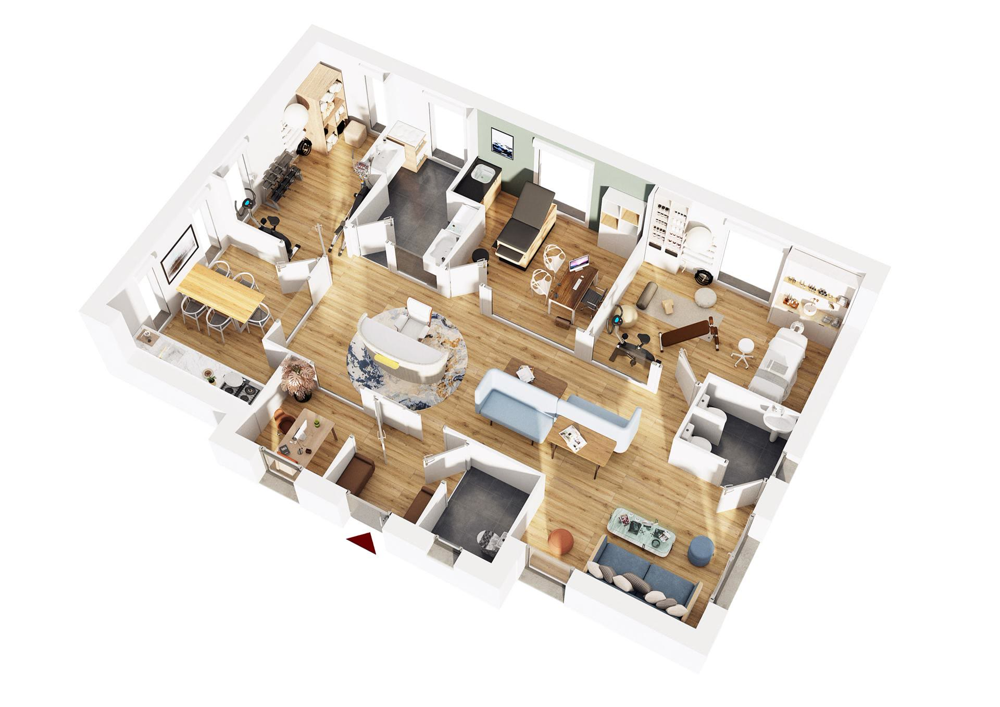

L'accessibilité prise dans le plan
Accès, circulations et sécurité sont dessinés avec le bâtiment, pas ajoutés après coup.
Vous recevez une clientèle qui attend sérieux et discrétion. Un local commercial banal ou une copropriété partagée ne renvoient pas cette image.
Construire votre propre lieu, c'est maîtriser votre cadre de travail de bout en bout : l'emplacement, l'accueil, la confidentialité des échanges et l'image que vous donnez dès le premier rendez-vous.
Accès, circulations et sécurité sont dessinés avec le bâtiment, pas ajoutés après coup.
Cloisons et isolation phonique calibrées pour les échanges sensibles, dossier après dossier.
Volumes, matériaux et finitions font l'image que votre client voit avant même de s'asseoir.
Pas de copropriété, pas de bailleur, pas de travaux à négocier : l'adresse est la vôtre.
L'accueil met en confiance, les bureaux protègent la parole, la salle de réunion reste à l'écart. La discrétion se règle sur le plan, pas après coup.

Un espace d'attente distinct et une circulation discrète des clients.
Cloisons et isolation phonique pensées pour les échanges sensibles.
Une salle à part, accessible sans traverser les espaces de travail.
Des matériaux et des finitions qui installent une adresse identifiable.

Une vue de dessus pour valider les surfaces et les circulations avant le dépôt du permis : accueil, bureaux individuels, salle de réunion et espaces techniques.
Votre profession, votre organisation, l'image que vous voulez donner.
Plans, catégorie d'ERP adaptée à votre activité et dépôt du permis de construire.
Un conducteur de travaux suit le chantier et vous tient informé à chaque étape.
Une adresse prête à recevoir vos premiers rendez-vous.
Décrivez-nous votre activité et vos attentes. Nous revenons vers vous pour étudier la faisabilité de votre projet.
Un conseiller de votre secteur vous rappelle sur le créneau choisi.
Parlez-nous de votre profession, de votre organisation et de votre terrain : nous concevons le bâtiment qui va avec.
Étudier mon projet